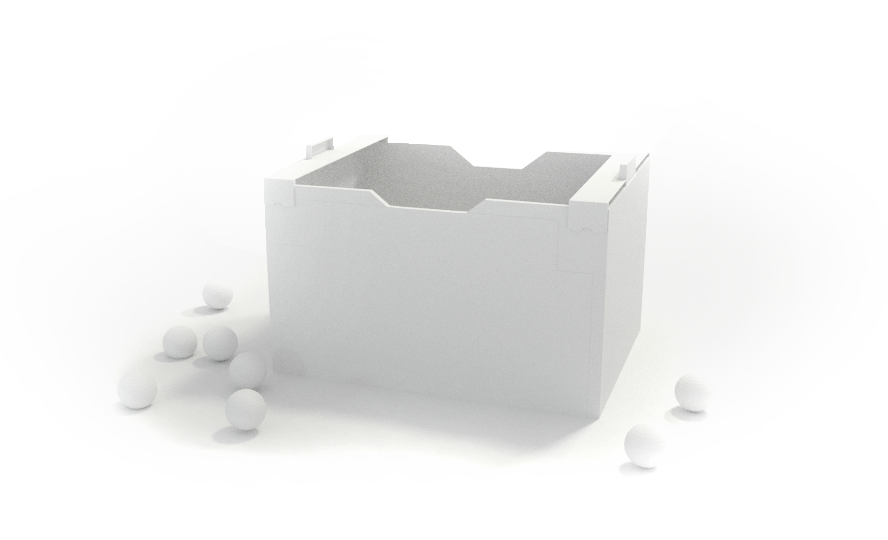
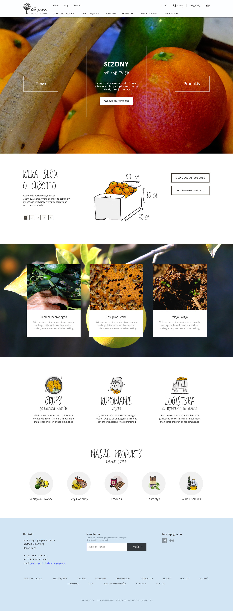
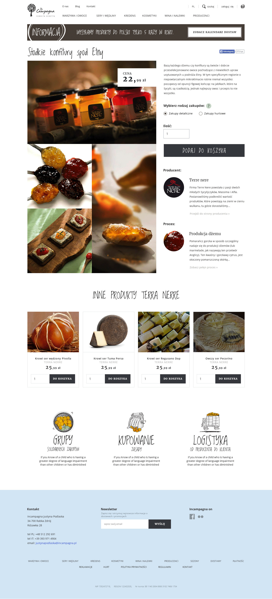
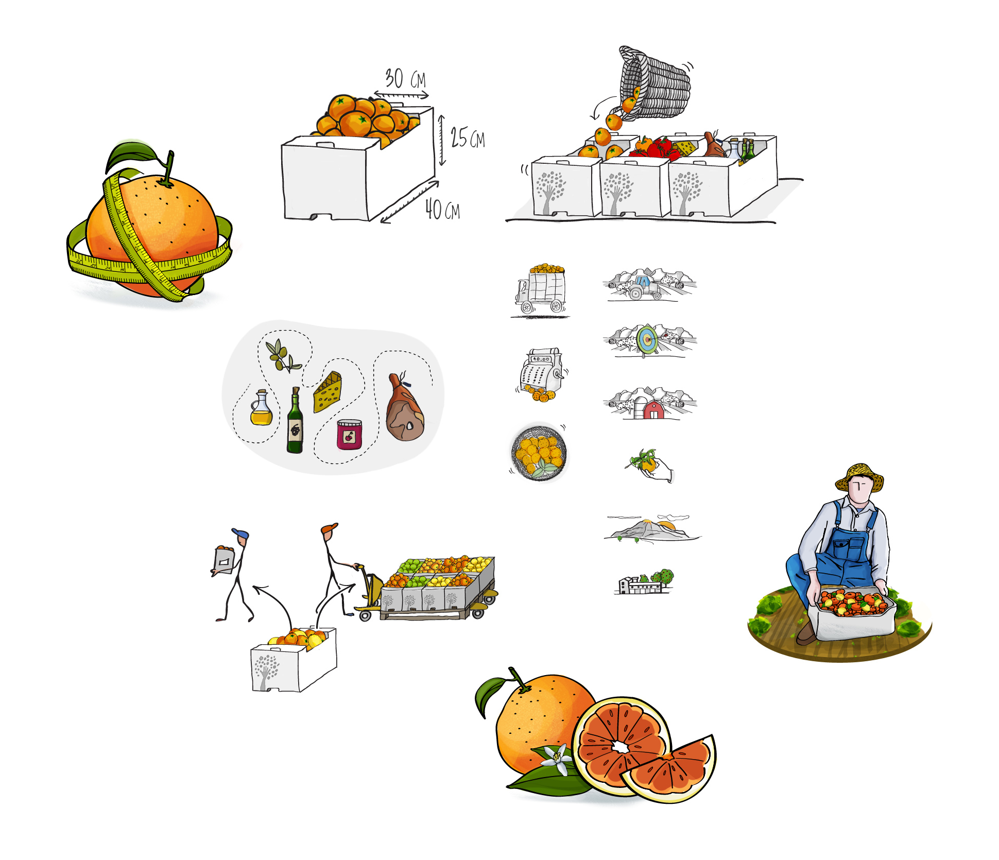

Back
Back
The InCampagna network is a project that brings together producers and farmers of Italian, organic, and traditional food.
I was the lead designer dedicated to the InCampagna project. Collaborated directly with the client, and both led and participated in workshops. My responsibilities included designing prototypes custom illustrations and animations to enhance the visual identity and user experience of the website.

We began our work with on-site design workshops in Sicily at the InCampagna headquarters. These sessions allowed us to deeply understand the brand’s values, gather user insights firsthand, and align closely with stakeholder expectations. Conducting workshops on location helped ensure that the design reflected both the authentic spirit of the region and the specific needs of InCampagna’s customers.
We create clean design that show ethical food marketplace. Focused on clarity, trust, and storytelling through clean navigation, nature-inspired visuals, and transparent brand communication.

We built trust through a layout that showcased product origins, producer stories, and clear delivery details. Trust signals like certifications and local producer profiles reinforced authenticity, while highlighting community and collaboration behind each product.


Custom illustrations I created were essential in adding warmth and personality to the site. They visually expressed the brand’s values, showcased the uniqueness of Sicily, and contributed to an engaging and memorable user experience.